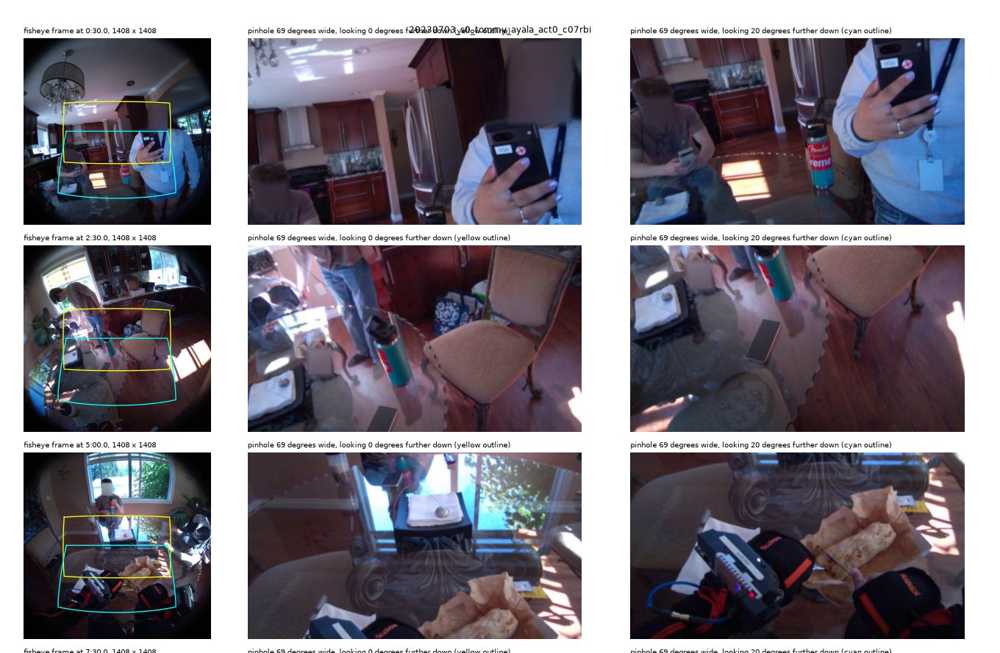
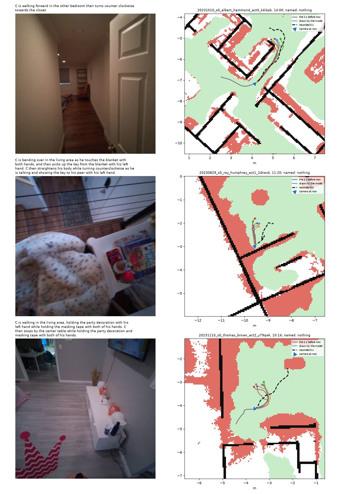

Gray
A system that takes what a head camera sees and a text prompt, generates motion that works in the scene, and notices when the world differs from what it expected. The aim is a closed loop that can be put into a scene and prompted around.
The name is after Jeffrey Gray's comparator: predict what the senses will report next, compare it with what they report, and interrupt the running plan on a mismatch.
Where it stands
1. Head path
Follows the prompt and reaches named objects in about 60 % of draws. In the first two seconds it goes through obstacles as rarely as recorded paths do.
2. Comparator
Catches a different scene in 91 % of cases one second ahead, but also alarms in 13 to 16 % of cases when nothing changed. A retraining aimed at that is queued.
3. Body
The body of every recording was encoded again as one track. The first model is training; no final numbers yet.
The loop
Plan, move, compare, replan. Also missing: any test in a scene that really changes.
Rules the project keeps to. The model gets only what a robot would have: camera image, text, its own pose. No gaze, no known map of the scene. Maps and other truths are used to train and to score, never as input. The work is on indoor navigation.
Data
The source is Nymeria: people wearing camera glasses and a motion-capture suit in real homes, with a narration that describes each recording in pieces of about 5 seconds.
From fisheye to a normal camera
The glasses record a fisheye image. A robot camera does not, so every frame is cut to a pinhole view of 79.6 degrees before any feature is computed. The image features are DINOv3 (ViT-S/16): one vector per frame, and a 7 x 7 grid of vectors per frame.

Moments
A training sample is a moment: "now" is where a narration sentence begins. The model is given the 2 seconds before now and predicts the 5 seconds the sentence describes. The navigation subset keeps indoor moments that are mostly walking, and drops standing around and outdoor walks. Five homes are held out entirely; every score below is from those.
Judging a path without the recorded one
Many paths are valid for one sentence, so distance to the recorded path is a poor score. Paths are judged on three things: whether the head goes when the text says so, whether it ends near an object the sentence names, and whether it goes through something.
The last needs a map of each home. That took several rounds.


The annotated furniture boxes turned out to be in the right place but too rough: they include space people walk through. The truth used now does not rest on them.

Part 1: the head path
A flow model that generates the head poses of the next 5 seconds from the past head poses and images, the sentence, and the image grid of the current frame. During training it also has to say how far the way is free around the camera, which makes it attend to the room; the map is never an input.
How often a generated path goes through something
Share of 5-second paths with a point in a blocked cell while moving. 3,000 held-out moments that go 1 m or further. Lower is better.
- What helped most cost nothing. Fewer sampling steps and less starting noise cut the rate from 34 % to 17.5 % without retraining. Noise spreads the draws mostly into worse paths.
- It follows the text. It goes when the sentence mentions walking in 85.5 % of cases (people: 92.0 %) and in 12.3 % when it does not (people: 15.9 %).
- It reaches named objects in about 60 % of draws, against 25 % when given the wrong sentence.
- The first seconds are as good as recorded. Over the first 2 seconds, which a replanning system executes, 3.1 % of paths go through something, against 2.9 % for recorded paths.


Reading the room from the image
The remaining weakness of the head path is that it cannot read the layout of a home it has not seen. On homes it trained on it estimates the free distance around the camera to 0.28 m; on new homes to about 0.55 m. It learns rooms, not how to read a room.
A fixed test bed compares image features on this: a small probe has to say, from the features of one frame, how far the way is free along 16 directions.

- No feature tried changes the picture: finer grids, estimated depth, earlier frames.
- Nothing reads obstacles within 2.5 m better than to about 0.45 to 0.5 m.
- The most likely cause is the number of homes: 39 for training.
More homes from another dataset
Ropedia Xperience 2 has walk-throughs of other homes with a head-worn camera rig, poses and a mesh. Of 105 indoor walk-throughs online, 41 had a usable mesh.


| Probe trained on | Held-out Nymeria homes | of that, under 1 m | Held-out Ropedia scenes |
|---|---|---|---|
| The median distance (no image) | 1.16 m | 0.47 m | 0.74 m |
| Nymeria, 39 homes | 0.82 m | 0.69 m | 0.65 m |
| Ropedia, 27 scenes | 1.00 m | 0.60 m | 0.51 m |
| Both | 0.81 m | 0.64 m | 0.52 m |
Not conclusive. Adding the Ropedia scenes does not improve reading held-out Nymeria homes (0.81 m against 0.82 m), and the two datasets transfer poorly to each other. 27 scenes from another camera rig, with a truth made differently, are too few and too different to show whether hundreds of homes would help. Worth repeating when the rest of that dataset is published.
Part 2: the comparator
Given the past, the sentence, and the head poses of the next 5 seconds, the comparator predicts what the camera will show at each of those frames, and how uncertain that prediction is. The signal is the surprise: the error divided by the predicted uncertainty. It should be about 1 while the world is as expected, whatever the head does.
- It predicts. On unseen homes its error is 0.53, against 1.07 to 1.16 for assuming the image stays as it is.
- It is calibrated. The surprise is 1.08 to 1.10 on true frames.
- Turning is explained away. The raw error rises from 0.34 to 0.75 with turning; the surprise stays at 1.1.
Does it notice a changed world?
Recordings contain no unexpected changes, so the comparator is handed another frame in place of the true one, taken from nearly the same camera pose. The threshold is set so that 5 % of true frames raise an alarm.
Alarm rate one second ahead, by what the camera is shown
3,000 held-out moments. The first row should be near 5 %, the last high.
- The order is right, and predicting the image grid catches a different scene more often: 91 % against 79 %.
- Too many false alarms when nothing changed: 16 %, or 13 % when only the part of the image on the path is compared. Averaging over five frames does not help.
- They belong to the first second, where the model is most sure, and two views of an unchanged place differ by more than it allows for: hands, people, objects being handled. Two seconds ahead the rate is 9 %, four seconds ahead 6 %.
Queued: compare-v4 is trained with such revisits as targets (48 % of all frames have one), so that its own uncertainty learns how much an unchanged place varies. After it: a test in one home where it is known which furniture stood where in each recording, to see whether a moved piece is noticed.
Part 3: the body
The body model gets the head path of the next 5 seconds and generates the body along it: a pose encoding per frame plus the pelvis path and facing direction. It is also given the past body, which a robot knows; in 30 % of training samples that is withheld, for the very start of a deployment.
- Data prepared. The body existed only per 8-second window, each with its own floor height. It was encoded again from the motion capture as one continuous track per recording, for all 1,074 recordings. The new encoding agrees with the old one, and the head joint sits 14 to 15 cm from the camera throughout.
- Training has started. After 2,000 of 40,000 steps the generated pelvis is 10.4 cm from the recorded one on held-out homes, against 22.2 cm for placing it straight under the camera. These are early numbers, not results.
- Checks prepared for when it finishes: which sampling settings are best; whether the body still belongs to the path when the path comes from the head-path model; and whether it drifts when it continues from its own output one second at a time.
What was tried and did not work
| Idea | Outcome |
|---|---|
| Text guidance when sampling head paths | No gain. |
Estimated depth as an extra input (head-v6) | 34.1 % against 33.7 % without it. |
| Explorative training, best of several noises (arXiv 2607.27372) | Worse than ordinary training. |
| Earlier frames as memory for reading obstacles | No gain in the test bed. |
| Annotated furniture boxes as the truth for collisions | Too rough at close range; replaced by walked and measured space. |
| Judging the alarm over five frames | False alarms unchanged. |
| Comparing only the part of the image on the path | False alarms 13 % against 16 %, detection falls with it. |
| More homes from Ropedia Xperience 2 | Not conclusive with what is published so far. |
Several explanations were also tested and refuted: that near obstacles are out of view (95 % are visible), and that the comparator's false alarms come from loose pose matching, short events, or the edges of the image.
Open, and next
- Comparator: the result of
compare-v4, then the moved-furniture test. - Body: finish training, run the three checks, and look at the motion as a figure.
- The loop: planner and comparator connected, on recordings first.
- A scene that can change. Only this tests the comparator's real purpose. It needs a renderer or a robot; a rendered version of one home gives image features that differ strongly from real ones, which is unsolved.
- Reading unseen rooms stays limited, most likely by the number of homes.
- Choosing among several drawn paths. Among 8 draws one is nearly always clear (3.7 %), but picking by the model's own estimate gives about 20 %.